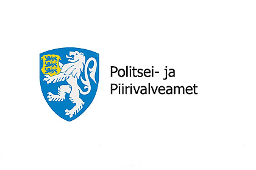

Веб-полиция
Веб-полиция

В конце апреля сотрудники Центрального управления криминальной полиции в сотрудничестве с правоохранительными органами Финляндии арестовали восемь человек, подозреваемых в принадлежности к преступной организации в Эстонии и Финляндии.
Согласно обвинениям, преступной организацией руководил 51-летний Валерий, известный в подполье как Джокер. В участии в преступной организации подозреваются девять человек. По предварительной информации, подозреваемые связаны с имущественными и экономическими преступлениями, такими как мошенничество. Все подозреваемые ранее были судимы за насильственные преступления.
Государственный прокурор Райго Аас заявил, что в рамках уголовного дела осуществлялось тесное сотрудничество с правоохранительными органами Финляндии. "В Финляндии одни и те же члены преступной сети подозреваются в совершении различных преступлений. Например, некоторые из них обвиняются в Финляндии в торговле людьми и мошенничестве в сфере трудового посредничества, а один из них также обвиняется в налоговом мошенничестве и контрабанде", - сказал Аас.
По словам начальника отдела по борьбе с организованной преступностью Центрального бюро криминальной полиции Аго Лейса, преступным сообществам трудно действовать в Эстонии, поэтому преступники расширяют свою деятельность за рубежом. "Согласно обвинениям, члены преступной организации совершали имущественные и экономические преступления, чтобы заработать деньги для организации и обеспечить ее существование. Группа расширила свою деятельность в Финляндии, где она могла надеяться на увеличение прибыли и скрыть свою деятельность от эстонской полиции. Группу характеризует то, что она является одной из немногих эстоноязычных групп в эстонских преступных кругах", - прокомментировал Лейс.
"Преступление, совершенное более чем одним человеком, не означает автоматически, что это преступное сообщество. Преступная организация имеет структуру, иерархию, и ее деятельность не заканчивается, когда члены покидают ее или меняются. В некотором смысле, это альтернативная, отдельная социальная группа, созданная для совершения преступлений. Поскольку преступная организация прилагает максимум усилий для получения доходов от преступлений, организованная экономическая преступность неизбежно представляет большую угрозу как для отдельных лиц, так и для экономической среды.
Полицейская статья
В случаях опасности, звоните по номеру 112.
Причины обращения к веб-полиции:
Если вам нужен совет полиции
Если у вас есть вопросы о законе
Если вы хотите отправить наводку
или сообщение в полицию.
Если вы стали жертвой издевательств/домогательств
Новости из этого региона: нет

Полицейская статьяДругие фотографии


Выберите регион
Ида-Вирумаа, Нарва
Веб-Полиция
veebipolitsei@gmail.com
Номер экстренной помощи 112
 Пн-Пт 9.00-17.00 / Поддержка клиентов 612 3000
Пн-Пт 9.00-17.00 / Поддержка клиентов 612 3000